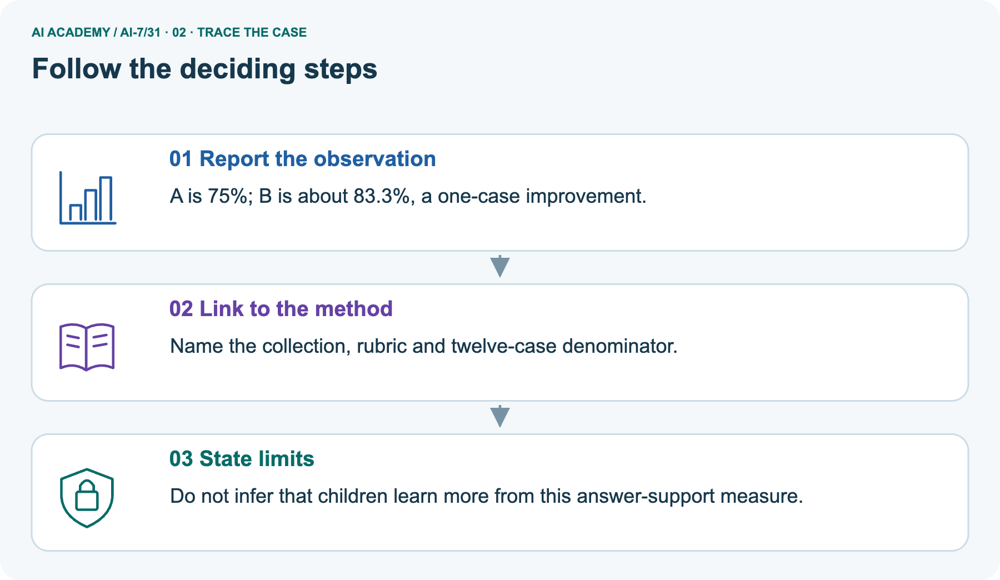
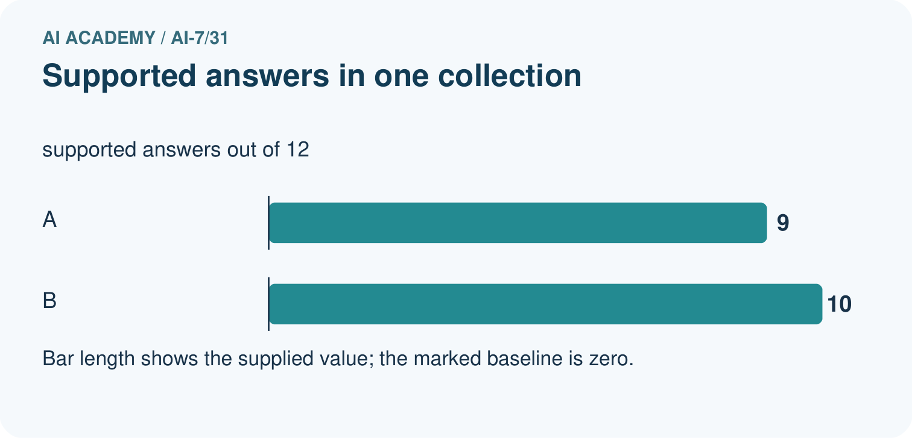
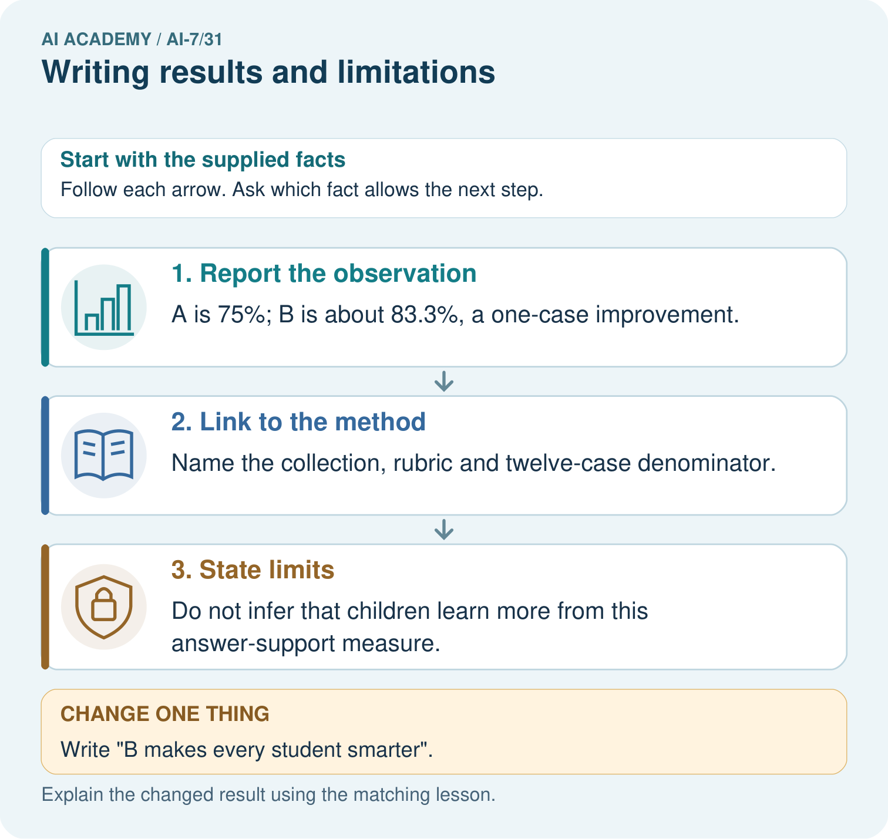
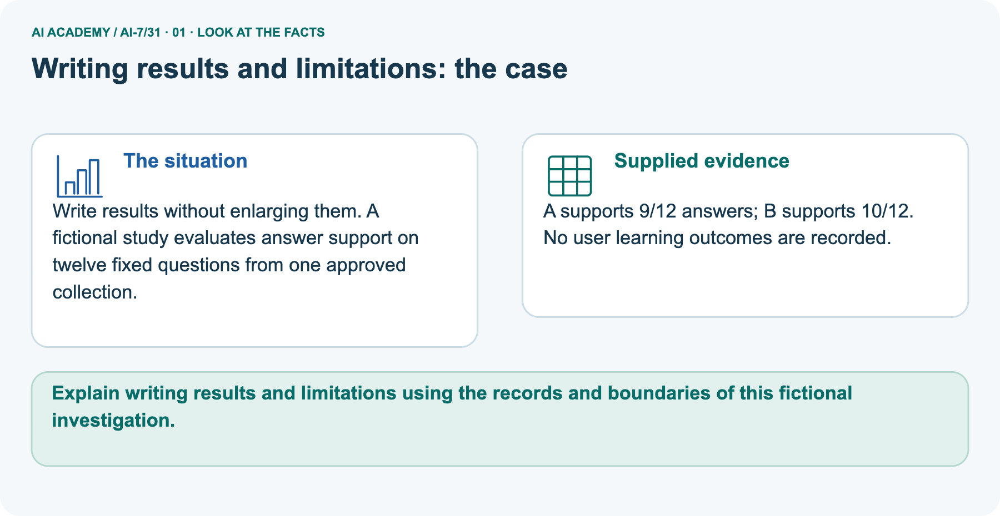
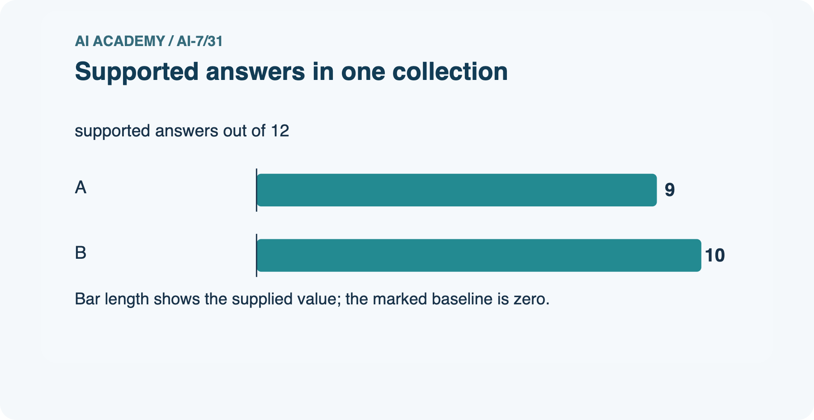
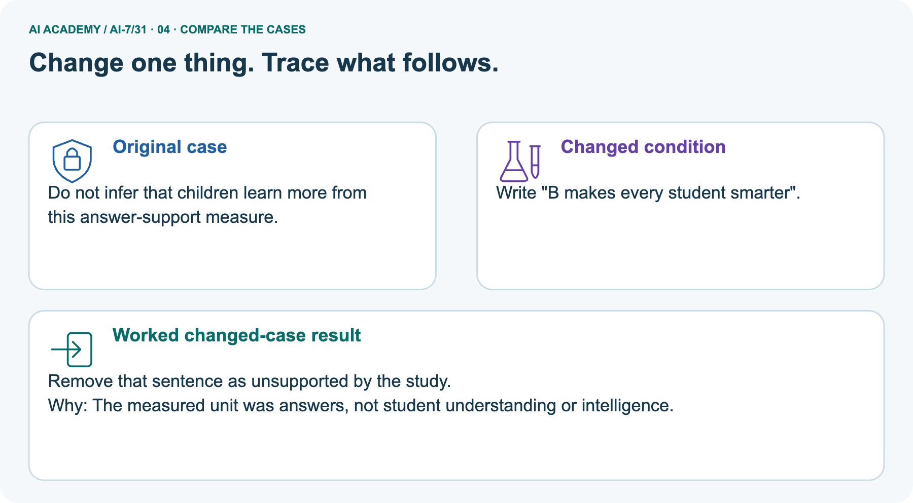
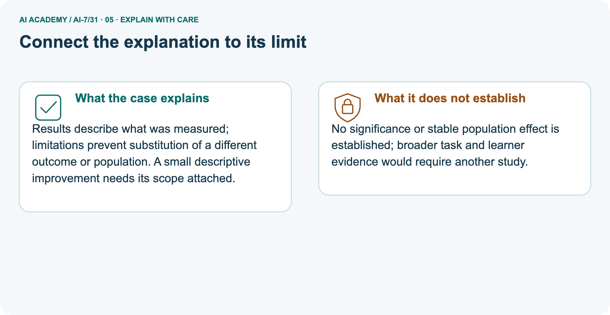
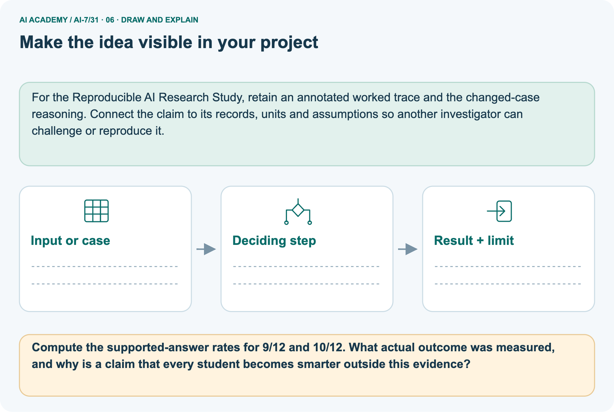

AI Academy · Level 7 · Grade 12 · Week 31 · Teacher guide
Writing results and limitations
Learn to understand, design, build, test and explain AI systems responsibly.
Project: Reproducible AI Research Study
THE CONNECTED WEEK
Teach the evidence-to-conclusion chain for Writing results and limitations
Keep counts, outcome definitions and failed conditions visible without substituting unmeasured benefits.
Keep one habit: Model the main case → reveal the picture gradually → probe limits → assess independent reasoning → plan a changed-case return.
Main lesson · Section 1
Prepare the connected research investigation
Keep modelling, shared practice and independent evidence distinct.
Target and main teaching plan
Primary target: Explain the mechanism and terminology of writing results and limitations
| Session | Sequence and minutes | Resources |
|---|---|---|
| Session 1 · Understand · 45 min | 0–7: recall and prerequisite; 7–15: inspect the concrete case and predict; 15–30: teacher models the worked trace; 30–40: learners explain a step using the text and visual; 40–45: check the core idea. | Use Your mission, Notice the evidence, See how it works, Words that unlock the idea and Follow a worked example; record the brief recall in the workbook. |
| Session 2 · Practise · 45 min | 0–5: retrieve the procedure; 5–15: W2 completion practice; 15–23: explain and check with a partner; 23–30: each learner answers the misconception check; 30–40: targeted reteaching or a harder variation; 40–45: prepare the investigation. | Use Find and repair a mistake, Practise together and Run the investigation, with workbook W2 and Individual reasoning check. |
| Session 3 · Investigate and transfer · 45 min | 0–5: retrieve the decision rule; 5–20: investigate or trace; 20–30: start the independent case; 30–38: connect the project; 38–43: act on feedback; 43–45: plan the return check. | Use Run the investigation, Build your understanding, Connect your project and Show what you know. Reserve further time for the full task set. Use a code example only where one is actually supplied. |
This is a starting allocation of 135 minutes, not a validated duration. Preserve all named topics. Schedule extra time for connected examples, the full investigation, independent cases and project building.
Repeated copies of a case share one recorded attempt; they are not new evidence.
Preparation and prerequisite
Lesson and workbook; paper and pencil
Calculator and optional local Python 3 for arithmetic; no live API or private data
Prepare the fresh retry separately and withhold its solution until after collection
A result depends on the inputs, procedure and conditions that produced it. Preserve data roles and distinguish observed outcomes from predictions or unmeasured conditions.
If the prior concept cannot be explained, use a short retrieval activity before this chapter.
Opening retrieval
Without opening the old lesson, explain one key idea from Writing the methods section. Give an example and a mistake that the idea helps you avoid.
Look for: Explain the mechanism and terminology of writing the methods section
Reference example, not the only acceptable wording: Teacher explanation: A methods section should let a reader reconstruct the design and computation. Detail should explain choices that affect evidence.
Report question, units, sampling, permissions, data roles, baseline, procedure, metrics, uncertainty assumptions, missing/exclusion handling and versions. Distinguish prespecified and later changes.
Without opening the old lesson, explain one key idea from Negative results and claim revision. Give an example and a mistake that the idea helps you avoid.
Look for: Explain the mechanism and terminology of negative results and claim revision
Reference example, not the only acceptable wording: Teacher explanation: Negative results report that the evidence did not meet a declared expectation.
They can reveal design limits or useful constraints without proving no effect anywhere. Compare results with the original criterion and uncertainty assumptions.
Preserve the failed hypothesis, discuss plausible mechanisms and label revised questions as new work.
Without opening the old lesson, explain one key idea from Running the primary experiment. Give an example and a mistake that the idea helps you avoid.
Look for: Explain the mechanism and terminology of running the primary experiment
Reference example, not the only acceptable wording: Teacher explanation: The primary experiment follows the frozen plan and captures every eligible outcome. Unexpected failures are recorded rather than silently retried away.
Run declared cases, store raw paired results and deviations, and keep primary analysis separate from exploratory repairs. Stop or escalate only according to the stated rule.
Pictured end goal
Explain writing results and limitations using the records and boundaries of this fictional investigation.
Earlier wording, alternatives and picture transcripts
Teach the learning cycle
Retrieval answer guidance
Writing the methods section
Negative results and claim revision
Running the primary experiment
Compact alternative: two 45-minute sessions for the core explanation and W1–W5 only. The main plan uses three sessions; schedule further time for the complete investigation, project, visual journey and any code examples. Results and limitations should state observed estimates before interpreting them. Separate measured comparisons from causal or deployment claims.
Use the supplied constructed scenarios to make the mechanism inspectable. Collect W4 before sharing solutions.
Students should name intermediate evidence and limitations; classroom pacing and learning effectiveness remain unvalidated.
Outcomes
Explain the mechanism and terminology of writing results and limitations
Apply the stated procedure to a new case with a traceable result
Identify an assumption or limitation and design a revealing follow-up
Preparation
Prerequisite answer
End goal for the pictorial case
This added worked case illustrates the week’s main idea. Retain all original and connected topics; schedule its practice within the teaching cycle.
Main lesson · Section 2
Model the whole case and check each inference
Keep the independent answer private until after the first attempt.
Definitions and complete contract
Results and limitations should state observed estimates before interpreting them. Separate measured comparisons from causal or deployment claims.
Give counts, denominators, effect sizes, valid uncertainty and failed conditions. State missing evidence and preserve the original primary outcome.
| Results item | Complete supplied exercise contract |
|---|---|
| Main supplied counts | A eight of twelve passes; B nine of twelve |
| Main failures | All three B failures concern conflicting sources |
| Missing conflict denominator | Total number of conflict cases not supplied; no conflict-slice pass rate can be calculated |
| Main user evidence | No user study occurred |
| Separate picture | A supports nine of twelve answers; B ten of twelve, one approved collection |
| Unmeasured picture outcome | User learning is not recorded |
| Unknown inference | Significance, stable population effect, cause, timings and deployment usefulness not supplied |
Main evidence ledger and checked key
| Main results component | Supported statement |
|---|---|
| Observed pass rates | A 8/12 ≈ 66.667%; B 9/12 = 75% |
| Descriptive difference | 1/12 ≈ 8.333 percentage points in B’s favor |
| Failure category | Three B failures involve conflicting sources |
| What category statement does not imply | Not that every conflict case failed; total conflict cases unknown |
| User-study status | No study occurred; classroom usefulness not measured |
| Paired identities / statistical effect | Not supplied; no reconstructed transitions or significance |
| Scoped report | B passed one more of twelve supplied cases, with conflict failures retained |
Main A 8/12 ≈ 66.667%, B 9/12 = 75%, gain 1/12 ≈ 8.333 percentage points. All three B failures concern conflicting sources, but total conflict cases are unknown, so no conflict-slice rate follows. No user study supports classroom usefulness. Separate picture A support 9/12 = 75%, B 10/12 ≈ 83.333%, same one-case gain but a different stated outcome. No learning or timing claim follows.
Independent candidate 10/15 ≈ 66.667%, baseline 9/15 = 60%, descriptive gain 1/15 ≈ 6.667 points. State no timings measured and no established population/significance or broad task generalization. Accept other concrete supported limits without inventing missing observations.
Writing results and limitations — evidence trace
Guided: 75% versus 66.667%, gain 8.333 points on 12 cases; conflict failures remain. No classroom usefulness or universal reliability claim is supported. Qualification: A limitation should directly bound the corresponding claim rather than contradict an oversized headline. Exit: accept a concrete variation with its predicted outcome and a stated condition that would challenge the mechanism; reject a claim resting on unmeasured evidence.
B passes 9/12, A 8/12; three B failures all concern conflicting sources. No user study occurred.
75% versus 66.667%, gain 8.333 points on 12 cases; conflict failures remain. No classroom usefulness or universal reliability claim is supported.
Compare the intermediate evidence with the final statement. Explain why each number or decision follows from the stated inputs.
The conclusion belongs to this scenario and procedure; changing the inputs, evaluation population or authority can change what it establishes. Retain the raw record so a later revision can be compared honestly.
Boundary and misconception probes
| Results/limits audit | Checked interpretation |
|---|---|
| One more observed pass | Report magnitude and denominator |
| All B failures involve conflict | Failure category known; total conflict slice unknown |
| No user study | Do not claim measured classroom usefulness |
| More supported answers | Not measured learning or general intelligence |
| Higher descriptive count | No automatic significance or causal inference |
| No timings measured | Do not claim speed improvement |
| Aggregate paired counts only | Do not invent exact case transitions |
| A limitation is acknowledged | Does not license keeping the unsupported broad claim |
Separate pictured facts and full reasoning
Write results without enlarging them. A fictional study evaluates answer support on twelve fixed questions from one approved collection.
A supports 9/12 answers; B supports 10/12. No user learning outcomes are recorded.
The separate picture measures answer support on twelve fixed questions from one approved collection. A supports nine answers, or 75%; B supports ten, or approximately 83.333%. The difference is one supported answer, about 8.333 percentage points. This is a support outcome, not evidence that any learner became smarter. No user learning, timings, significance or stable population effect is supplied.
Keep the main eight-versus-nine pass case separate from this nine-versus-ten support case. A broader question about learners would require its own appropriate design and evidence, not a stronger adjective in the conclusion.
| Separate support outcome | A | B |
|---|---|---|
| Supported answers | 9/12 | 10/12 |
| Observed rate | 75% | ≈83.333% |
| Difference | One additional supported answer | ≈8.333 percentage points |
| Collection | Same stated approved collection | Only this fixed question set |
| Learner improvement | Not measured | Not measured |
| Timing / significance | Not supplied | Not supplied |
| Claim every student becomes smarter | Unsupported outcome substitution | Not a consequence of support counts |

Picture trace and changed-condition key



Read the picture one step at a time
Results describe what was measured; limitations prevent substitution of a different outcome or population. A small descriptive improvement needs its scope attached.
No significance or stable population effect is established; broader task and learner evidence would require another study.
Change: Write "B makes every student smarter".
Prediction: Remove that sentence as unsupported by the study.
Reason: The measured unit was answers, not student understanding or intelligence.
Earlier wording, alternatives and picture transcripts
Begin by writing the question the procedure is intended to answer. Identify the information already supplied, the information it will produce and the information still missing.
These are constructed classroom examples; they do not require live accounts, private records or an external service. Do not treat a plausible explanation as a measured outcome.
Before applying the procedure, write its units, denominator or decision boundary where relevant. A partner should be able to repeat each step using the same inputs.
If a required input is absent or violates the stated contract, record that condition explicitly instead of quietly replacing it with a convenient value.
| Term | Meaning |
|---|---|
| Descriptive estimate | A quantity calculated from observed data |
| Interpretation | A statement about what results establish |
| Limitation linkage | Connecting each restriction to the claim it limits |
Model the reasoning aloud
Use the complete worked example below before asking learners to complete W2. Reveal a small part, invite a prediction, then explain the deciding step.
These teacher notes contain solutions; do not reveal the independent case answer during modelling.
| Thinking move | Teacher prompt |
|---|---|
| Plan | What is given? What is the question? Which procedure fits these facts? |
| Do | Point to each input and intermediate step in the worked trace. Name the rule that allows the next step. |
| Check | Does the output answer the question? Which assumption or limitation prevents a larger claim? |
Use the diagram and verbal explanation together. Ask learners to match a sentence to a specific visual step; do not assign learners fixed visual or auditory learning styles.
A pictorial worked case: Writing results and limitations
The facts we will use






Why this result follows
What this example does not establish
Change one thing in the pictured case
Ask while showing the picture
Cover the result. Ask learners to name the inputs and predict the next step. Uncover one step, connect the icon to the actual procedure, and explain its evidence. Then change the supplied condition and compare.
The picture is a representation; it does not document execution of a real AI model.
Main lesson · Section 3
Model a step,then remove help
Collect each learner’s reasoning before showing a key.
Current completion task and checked reasoning
Completion task: B passes 9/12, A 8/12; three B failures all concern conflicting sources. No user study occurred. Show the intermediate steps and give the conclusion with its scope.
Teacher check: Teacher explanation: 75% versus 66.667%, gain 8.333 points on 12 cases; conflict failures remain. No classroom usefulness or universal reliability claim is supported.
Start by identifying the given inputs together. Leave the intermediate steps blank. If needed, model one step, then withdraw that help on the next step. Move to a full trace only when the partial trace is understood.
For partners, alternate explainer and checker; collect a response from every learner before discussion.
Individual misconception check
Use the worked case for Writing results and limitations. Proposed explanation: “The worked result establishes every future case”. Decide whether this explanation is supported.
Point to the step or supplied fact that decides; explain your repair if needed.
Expected correction: A limitation should directly bound the corresponding claim rather than contradict an oversized headline.
Collect explanations, not only yes/no votes. If a misunderstanding is common, re-model the relevant step for the class.
If it affects a few learners, give a short targeted group explanation while others solve a more demanding variation.
Pictured reasoning and changed case
Compute the supported-answer rates for 9/12 and 10/12. What actual outcome was measured, and why is a claim that every student becomes smarter outside this evidence?
A is 75%; B is about 83.3%, a one-case improvement. Name the collection, rubric and twelve-case denominator. Do not infer that children learn more from this answer-support measure.
Changed case: Remove that sentence as unsupported by the study. The measured unit was answers, not student understanding or intelligence.
Changed-case reasoning: Remove that sentence as unsupported by the study. The measured unit was answers, not student understanding or intelligence.
Collect each learner’s explanation before discussion. Use the first missing connection between input, deciding step and result to choose support. This question is worked-case practice, not fresh mastery evidence.
Accessible support and extension
Use the worked example in Sections 3 and 6. Collect a prediction before revealing its result; ask the learner to point to each intermediate fact.
Provide an input/procedure/result/limit frame and a calculator when needed. Ask students to identify the first step before completing the whole trace.
Extension: compare two concrete variants of this mechanism while holding unrelated conditions fixed; report both successful and unsuccessful outcomes.
Earlier wording, alternatives and picture transcripts
| Time or stage | Teacher action |
|---|---|
| Session 1: 0–7 minutes | Retrieve the prerequisite; identify the input, procedure and evidence source. |
| 7–18 minutes | Explain See how it works and Words that unlock the idea. Complete W1 with a mechanism-based explanation. |
| 18–32 minutes | Trace the declared procedure and worked case. Complete W2, recording intermediate steps. |
| 32–45 minutes | Discuss the diagram with the worked input; use W3 to distinguish measured claims and limitations. |
| Session 2: 0–8 minutes | Retrieve the worked reasoning and collect the guided response before discussing it. |
| 8–20 minutes | Compare a proposed boundary variant with the original case; identify what remains fixed. |
| 20–35 minutes | Collect W4 independently. Require the procedure trace and the bounded conclusion. |
| 35–45 minutes | Use W5 and exit responses for feedback. Administer the fresh retry after feedback and preserve both attempts. |
Reduce help deliberately
Individual reasoning check
Pictorial practice question
Reasoned teacher answer
Main lesson · Section 4
Run the complete supplied investigation
Separate predictions,actual runs and paper traces.
Complete inputs,expected results and limits
Main A 8/12 ≈ 66.667%, B 9/12 = 75%, gain 1/12 ≈ 8.333 percentage points. All three B failures concern conflicting sources, but total conflict cases are unknown, so no conflict-slice rate follows. No user study supports classroom usefulness. Separate picture A support 9/12 = 75%, B 10/12 ≈ 83.333%, same one-case gain but a different stated outcome. No learning or timing claim follows.
Independent candidate 10/15 ≈ 66.667%, baseline 9/15 = 60%, descriptive gain 1/15 ≈ 6.667 points. State no timings measured and no established population/significance or broad task generalization. Accept other concrete supported limits without inventing missing observations.
Diagnose the current misconceptions
The worked result establishes every future case: A limitation should directly bound the corresponding claim rather than contradict an oversized headline.
A missing input may be replaced without recording the change: A replacement changes the evidence or contract. Record the change and its justification; do not silently turn unknown into a measured value.
Repeating an assessed case is new independent evidence: A replay checks consistency. An example used for feedback or revision cannot later be described as untouched final evaluation.
Use Section 9 for the evidence ledger. Add a boundary or missing-input case and record the expected response before checking. More successful repeats of one case do not establish wider coverage.
Choose accessible support
| What the response shows | Next teaching action |
|---|---|
| Missing or misread facts | Read the case aloud, mark supplied versus unknown facts, and let the learner restate it. |
| Wrong procedure | Return to the deciding step in the worked case. Contrast it with the proposed incorrect explanation. |
| Arithmetic or implementation error | Trace intermediate values or lines; preserve the first mismatch and retry that step. |
| Correct result without a reason | Ask for a trace and a changed case before marking independent understanding. |
| An unsupported wider claim | Ask which supplied evidence supports the claim and which further observation would be needed. |
Offer an oral explanation, drawing, enlarged visual or fewer examples when that removes a reading/writing barrier. Keep the same reasoning goal.
Stretch secure learners by changing a boundary or assumption and asking them to defend the effect, not simply by assigning more of the same questions.
Earlier wording, alternatives and picture transcripts
Match the support to the first error
Main lesson · Section 5
Assess the new research scenario
Keep the selected answer private until after a first attempt.
Selected independent task and checked answer
Selected case: Candidate 10/15, baseline 9/15; no timings measured. Write result and two limits.
Teacher explanation: 66.667% versus60%, gain6.667 points in15 cases. Timing is unmeasured and coverage/population generalisation remain limited.
Judge explanation,trace and limits
| Dimension | Evidence required |
|---|---|
| Explanation | Names the applicable idea or procedure and ties it to the supplied facts. |
| Trace and result | Preserves the given inputs and shows the relevant intermediate steps; distinguishes a prediction from an observed execution. |
| Limits | States the assumptions, missing evidence or conditions under which the result would change. |
Record each dimension as not yet, with support, or independent. Accept a valid alternative procedure with a defensible trace.
Do not penalise an honestly recorded model failure if the learner correctly explains its evidence and limits.
Give one usable repair
Name the earliest unsupported step and give one action to repair it. Have the learner make that repair now and explain why. Then assess the relevant skill on a fresh, fully specified case.
Confirm it was not previously practised with feedback; solve and check the new case before assigning it. A follow-up design prompt is a starting brief, not automatically an equivalent test.
W1 Explain the mechanism
Explain the weekly mechanism in your own words. Use the worked scenario to name its input, decision rule and output.
Teacher explanation: Results and limitations should state observed estimates before interpreting them. Separate measured comparisons from causal or deployment claims.
Give counts, denominators, effect sizes, valid uncertainty and failed conditions. State missing evidence and preserve the original primary outcome.
W2 Trace the worked case
B passes 9/12, A 8/12; three B failures all concern conflicting sources. No user study occurred. Show the intermediate steps and give the conclusion with its scope.
Teacher explanation: 75% versus 66.667%, gain 8.333 points on 12 cases; conflict failures remain. No classroom usefulness or universal reliability claim is supported.
W3 Audit the limit
A report omits this qualification: A limitation should directly bound the corresponding claim rather than contradict an oversized headline.
Explain how omitting it could change a reader's interpretation, and write an accurate replacement.
Teacher explanation: A limitation should directly bound the corresponding claim rather than contradict an oversized headline.
State the observed result separately from the unverified or out-of-scope claim; preserve the original evidence rather than inventing a missing fact.
W5 Design a revealing follow-up
For the worked scenario, propose one additional case that could reveal a failure, describe its expected outcome before running it, and explain what would need to remain fixed for a fair comparison.
Do not reuse W4 as a new final test after receiving feedback.
Teacher explanation: Accept a concrete variant of the worked input or a missing/conflicting/boundary condition, with an expectation derived from the declared procedure.
Require preserved settings, original outputs and data roles. A limitation should directly bound the corresponding claim rather than contradict an oversized headline.
The new case should test this particular mechanism rather than merely restate the original result.
Earlier wording, alternatives and picture transcripts
Guided and exit questions
Guided: 75% versus 66.667%, gain 8.333 points on 12 cases; conflict failures remain. No classroom usefulness or universal reliability claim is supported. Qualification: A limitation should directly bound the corresponding claim rather than contradict an oversized headline. Exit: accept a concrete variation with its predicted outcome and a stated condition that would challenge the mechanism; reject a claim resting on unmeasured evidence.
W1 Explain the mechanism
W2 Trace the worked case
W3 Audit the limit
W4 Apply a new case independently
Candidate 10/15, baseline 9/15; no timings measured. Write result and two limits.
Teacher explanation: 66.667% versus60%, gain6.667 points in15 cases. Timing is unmeasured and coverage/population generalisation remain limited.
W5 Design a revealing follow-up
Independent assessment and fresh retry
W4: 66.667% versus60%, gain6.667 points in15 cases. Timing is unmeasured and coverage/population generalisation remain limited. Require intermediate reasoning and the stated scope. Fresh retry: Candidate7/10, baseline8/10.
Expected reasoning: 70% versus80%, candidate lower10 points; report negative result and sample scope. If students need support, record it and reassess with another new case rather than awarding independence to a copied answer.
Assess independent transfer
Selected case answer
Feedback that the learner uses
Main lesson · Section 6
Connect, support and revisit research reasoning
Use saved evidence and assumptions to choose the next question.
Project and next-week bridge
Add a labelled writing results and limitations evidence sheet to Reproducible AI Research Study. Show how you can explain the mechanism and terminology of writing results and limitations.
Use the supplied fictional case and keep its inputs, intermediate steps, calculation or prediction, and limitation. Connect this record to last week’s record; a matching answer without a trace is insufficient.
Provide an input/procedure/result/limit frame and a calculator when needed. Ask students to identify the first step before completing the whole trace.
Extension: compare two concrete variants of this mechanism while holding unrelated conditions fixed; report both successful and unsuccessful outcomes.
Next connection: Peer review and response. Preserve the current case record and retrieve its evidence boundary before moving on.
Retain the project ledger and assess a changed case after support. Check the relevant prerequisite before carrying this component forward.
For the Reproducible AI Research Study, retain an annotated worked trace and the changed-case reasoning. Connect the claim to its records, units and assumptions so another investigator can challenge or reproduce it.
Delayed return and support record
Suggested return points in this level: ai-7/32, ai-7/34. Use actual classroom dates, adjusting for holidays and gaps. One, three and six teaching weeks are scheduling choices, not a claimed optimal spacing.
At a delayed check, ask for the idea from memory and a changed application. Compare with the earlier independent response and record support used.
For a new level, revisit the previous capstone before checking the new prerequisites.
| Record | Teacher evidence |
|---|---|
| Learner code and date | |
| Concept and case used; prior exposure | |
| Explanation / trace / limits | |
| Support and first repair | |
| Changed case and delayed outcome | |
| Next teaching action |
Use the evidence to choose reteaching or the next step. A completed page, confidence rating or attractive project does not by itself demonstrate understanding.
Earlier wording, alternatives and picture transcripts
Plan the delayed return
Project evidence from this case
Reference bank and extra practice
Choose the reference that helps your next step.
Reference · Alternative planning checklist
Reference · Section 7
Reference · Alternative planning checklist
Use alongside the main route when helpful.
Planning,assessment and project reminders
Teaching target: Explain the mechanism and terminology of writing results and limitations
Prepare the labelled worked-case picture, the matching workbook, fictional input cards and a place for individual responses. Check a local Python 3 environment before class; have a paper-trace version ready.
| Session | Plan | Resources |
|---|---|---|
| Session 1 · Understand · 45 min | 0–7: recall and prerequisite; 7–15: inspect the concrete case and predict; 15–30: teacher models the worked trace; 30–40: learners explain a step using the text and visual; 40–45: check the core idea. | Use Your mission, Notice the evidence, See how it works, Words that unlock the idea and Follow a worked example; record the brief recall in the workbook. |
| Session 2 · Practise · 45 min | 0–5: retrieve the procedure; 5–15: W2 completion practice; 15–23: explain and check with a partner; 23–30: each learner answers the misconception check; 30–40: targeted reteaching or a harder variation; 40–45: prepare the investigation. | Use Find and repair a mistake, Practise together and Run the investigation, with workbook W2 and Individual reasoning check. |
| Session 3 · Investigate and transfer · 45 min | 0–5: retrieve the decision rule; 5–20: investigate or trace; 20–30: start the independent case; 30–38: connect the project; 38–43: act on feedback; 43–45: plan the return check. | Use Run the investigation, Build your understanding, Connect your project and Show what you know. Reserve further time for the full task set. Use a code example only where one is actually supplied. |
Before class, solve the supported practice: B passes 9/12, A 8/12; three B failures all concern conflicting sources. No user study occurred. Show the intermediate steps and give the conclusion with its scope.
Reasoned practice answer: Teacher explanation: 75% versus 66.667%, gain 8.333 points on 12 cases; conflict failures remain. No classroom usefulness or universal reliability claim is supported.
Check every learner before discussion: Use the worked case for Writing results and limitations. Proposed explanation: “The worked result establishes every future case”. Decide whether this explanation is supported.
Point to the step or supplied fact that decides; explain your repair if needed.
Misconception repair: A limitation should directly bound the corresponding claim rather than contradict an oversized headline.
Support: read the exact case aloud, enlarge the labelled picture, supply input cards and model only the first deciding step. Accept a spoken explanation or drawing; retain the reasoning goal.
Extension: Write "B makes every student smarter". Require a prediction and a reason before comparing. Expected result: Remove that sentence as unsupported by the study.
Reason: The measured unit was answers, not student understanding or intelligence.
Independent assessment: withhold the reserved answer until the learner has attempted the new case. Record support separately from correctness.
| Criterion | Not yet | With support | Independent |
|---|---|---|---|
| Explanation | Names an answer without a deciding fact | Uses a hint to link fact and decision | Explains the deciding fact in own words |
| Trace or test | Cannot connect input and result | Completes steps with prompts | Traces or tests a changed case accurately |
| Limits and revision | Claims more than evidence supports | Names a limit after a prompt | States a defensible limit and useful next test |
Project checkpoint: Present and defend. Demonstrate the system, explain one failure and justify the next improvement with evidence.
Use the weekly teacher answer for topic-specific reasoning. A saved progress tick is an activity record; judge mastery from the learner’s explanation and evidence.
Reference · Feedback,labs and repair paths
Reference · Section 8
Reference · Feedback,labs and repair paths
Retain the first attempt and the evidence used for a repair.
Feedback and record guidance
Use the two formative questions as supported practice, not as independent mastery scores. Discuss the deciding evidence rather than accepting a guessed selection.
The feedback comes from the reviewed public worked case. Do not reveal the separately reserved independent teacher answer until the learner has attempted that case.
This week has no code block. Use this routine when a later lesson includes an executable lab.
Ask students to predict before running code. Preserve errors and actual outputs; collect a changed test and an explanation. The branch-boundary and indexing lessons deliberately include failure cases.
Use the earlier worked-explanation links to address a specific missing building block, then return to the current question. Adapt this suggestion after observing the learner; it is not an automatic diagnosis.
Collect the completed-work portfolio as evidence. Record support separately from correctness, and assess explanation, trace/test and limitations. Progress ticks and quiz selections alone do not establish mastery.
Reference · Teach with the six pictures
Reference · Section 9
Reference · Teach with the six pictures
Choose one picture for a particular reasoning move.
01. Writing results and limitations: the case



Write results without enlarging them. A fictional study evaluates answer support on twelve fixed questions from one approved collection. Supplied facts: A supports 9/12 answers; B supports 10/12.
No user learning outcomes are recorded.
Point to the given fact that matters most. Explain why it matters.
Teacher prompt: Point to the given fact that matters most. Explain why it matters. Ask learners to describe one label or arrow in ordinary words. Use the adjacent transcript if the image is difficult to see.
02. Follow the deciding steps
Report the observation: A is 75%; B is about 83.3%, a one-case improvement. → Link to the method: Name the collection, rubric and twelve-case denominator. → State limits: Do not infer that children learn more from this answer-support measure.
Point to each numbered stage and explain which recorded input it uses.
Teacher prompt: Point to each numbered stage and explain which recorded input it uses. Ask learners to describe one label or arrow in ordinary words. Use the adjacent transcript if the image is difficult to see.
03. Supported answers in one collection



Supported answers in one collection. Units: supported answers out of 12. A: 9. B: 10.
Read the labels and values. Explain the relationship the model shows.
Teacher prompt: Read the labels and values. Explain the relationship the model shows. Ask learners to describe one label or arrow in ordinary words. Use the adjacent transcript if the image is difficult to see.
Check row/column meanings, units and denominators before discussing a difference. Supplied toy values are not real class or model results.
04. Change one thing. Trace what follows.



Original case: Do not infer that children learn more from this answer-support measure. Changed condition: Write "B makes every student smarter". Expected result: Remove that sentence as unsupported by the study.
Reason: The measured unit was answers, not student understanding or intelligence.
Predict before checking the worked changed-case result. Name what changed and what the supplied facts allow you to conclude.
Teacher prompt: Predict before checking the worked changed-case result. Name what changed and what the supplied facts allow you to conclude. Ask learners to describe one label or arrow in ordinary words.
Use the adjacent transcript if the image is difficult to see. Changed-case reasoning: The measured unit was answers, not student understanding or intelligence.
05. Connect the explanation to its limit



Results describe what was measured; limitations prevent substitution of a different outcome or population. A small descriptive improvement needs its scope attached.
Limit: No significance or stable population effect is established; broader task and learner evidence would require another study.
Explain the case, then point to a limit on the claim.
Teacher prompt: Explain the case, then point to a limit on the claim. Ask learners to describe one label or arrow in ordinary words. Use the adjacent transcript if the image is difficult to see.
Keep the stated scope: No significance or stable population effect is established; broader task and learner evidence would require another study.
06. Make the idea visible in your project



For the Reproducible AI Research Study, retain an annotated worked trace and the changed-case reasoning. Connect the claim to its records, units and assumptions so another investigator can challenge or reproduce it.
Draw your input, deciding step, result and limit. Supported question: Compute the supported-answer rates for 9/12 and 10/12.
What actual outcome was measured, and why is a claim that every student becomes smarter outside this evidence?
Draw your project trace and justify the deciding step using evidence.
Teacher prompt: Draw your project trace and justify the deciding step using evidence. Ask learners to describe one label or arrow in ordinary words. Use the adjacent transcript if the image is difficult to see.
Supported practice key: A is 75%; B is about 83.3%, a one-case improvement. Name the collection, rubric and twelve-case denominator. Do not infer that children learn more from this answer-support measure.
Changed case: Remove that sentence as unsupported by the study. The measured unit was answers, not student understanding or intelligence.
Earlier wording, alternatives and picture transcripts
Use one picture at a time. Hide a worked result before asking for a prediction, then reveal it for feedback. These are supported teaching cases; retain the separate independent assessment for a fresh first attempt.